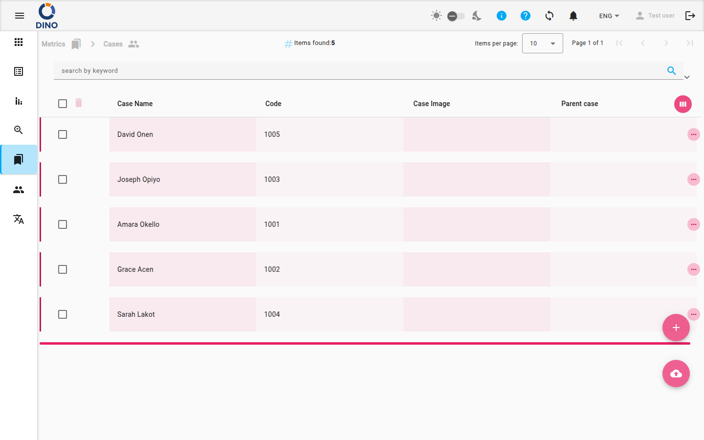

Cas
La page Cas vous offre un espace de travail centralisé pour suivre et gérer des cas individuels. Chaque cas est un enregistrement structuré pouvant contenir un nom, un code, une image, une relation parent, des notes et des attributs supplémentaires. Vous pouvez créer de nouveaux cas, modifier des cas existants, consulter les détails, supprimer des enregistrements et exporter votre liste de cas – le tout depuis un seul tableau interactif.

Aperçu du tableau
Le tableau principal affiche par défaut les colonnes suivantes :
- Nom du cas – Le nom que vous attribuez au cas (triable).
- Code – Un code généré par le système ou attribué manuellement (lecture seule après la création).
- Image du cas – Un fichier image téléchargé représentant le cas.
- Cas parent – Le nom du cas parent auquel ce cas appartient.
Des colonnes supplémentaires (telles que ID, Notes, Date de création et Attributs supplémentaires) sont masquées par défaut. Vous pouvez personnaliser les colonnes affichées en cliquant sur le bouton Personnaliser les colonnes (icône œil) dans l’en-tête du tableau.
Actions sur un seul cas
Sur le côté droit de chaque ligne, vous trouverez des icônes pour les actions suivantes :
- Modifier – Ouvre une boîte de dialogue pour modifier les détails du cas.
- Imprimer – Génère une fiche PDF imprimable pour le cas.
- Consulter – Ouvre une boîte de dialogue en lecture seule pour inspecter les informations du cas.
- Supprimer – Ouvre une boîte de dialogue de confirmation pour supprimer définitivement le cas.
Cliquez sur l’icône Plus (trois points verticaux) pour voir toutes les actions disponibles si certaines sont masquées.
Actions groupées
Sélectionnez plusieurs cas à l’aide des cases à cocher dans la première colonne. Lorsqu’au moins un cas est sélectionné, un bouton Supprimer apparaît en haut du tableau. Vous pouvez supprimer tous les cas sélectionnés en une seule fois.
La suppression groupée est définitive
Les cas supprimés ne peuvent pas être récupérés. Utilisez la suppression groupée avec précaution.
Créer un nouveau cas
- Cliquez sur le bouton d’action flottant Ajouter nouveau (icône plus) en bas à droite de la page.
- Une boîte de dialogue s’ouvre. Remplissez les champs obligatoires :
- Nom du cas – Saisissez un nom descriptif.
- Code – (Facultatif) Fournissez un code unique. Ce champ est en lecture seule après la création.
- Image du cas – Téléchargez un fichier image.
- Cas parent – Liez éventuellement ce cas à un cas parent existant.
- Notes – Ajoutez toutes les notes pertinentes.
- Cliquez sur Enregistrer pour créer le cas.
Importer des cas
Utilisez le bouton d’action flottant Importer (icône de téléchargement cloud) pour charger en masse des cas à partir d’un fichier. Les formats pris en charge sont définis par votre administrateur système.
Filtrer et rechercher
La barre de recherche en haut vous permet de filtrer les cas par :
- Mot-clé – Recherche dans tous les champs affichés.
- Plage de dates – Filtrer par date de création (De / À).
- Filtres supplémentaires – Sélectionnez parmi des filtres prédéfinis comme métrique, statut, utilisateur ou groupe d’utilisateurs.
Après avoir appliqué des filtres, vous pouvez enregistrer la combinaison sous forme de preset pour une réutilisation rapide. Pour enregistrer un preset :
- Ouvrez le panneau de filtres.
- Saisissez un nom dans le champ de preset.
- Cliquez sur Enregistrer.
Pour appliquer un preset enregistré, sélectionnez-le dans la liste et cliquez sur Appliquer.
Exporter des cas
Cliquez sur le bouton Exporter (icône de téléchargement cloud) dans la barre de filtre. Choisissez le format d’export (par exemple, CSV ou Excel) et sélectionnez les colonnes à inclure. Le fichier exporté contiendra tous les cas actuellement visibles, en respectant les filtres actifs.
Personnaliser le tableau
- Trier – Cliquez sur un en-tête de colonne triable (par exemple, Nom du cas, Date de création) pour ordonner le tableau.
- Sélecteur de colonnes – Ouvrez la boîte de dialogue de sélection des colonnes pour afficher ou masquer des colonnes.
- Développer les lignes – Certains cas peuvent avoir des sous-éléments (d’autres cas liés comme détails). Cliquez sur une ligne pour la développer et voir les enregistrements associés.
La page affiche également un fil d’Ariane en haut pour vous permettre de revenir à la section principale Métriques.
Pages connexes
- Vue d’ensemble des métriques – Revenir au tableau de bord principal des métriques.
- Domaines thématiques – Organiser les cas par domaine thématique.
- Lieux – Associer des cas à des lieux géographiques.
- Organisations – Lier des cas à des organisations.
- Projets – Regrouper des cas sous des projets.